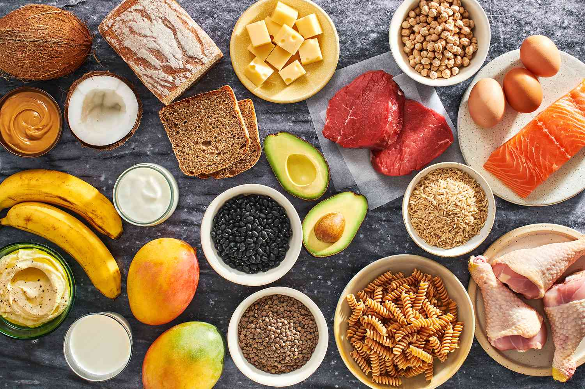
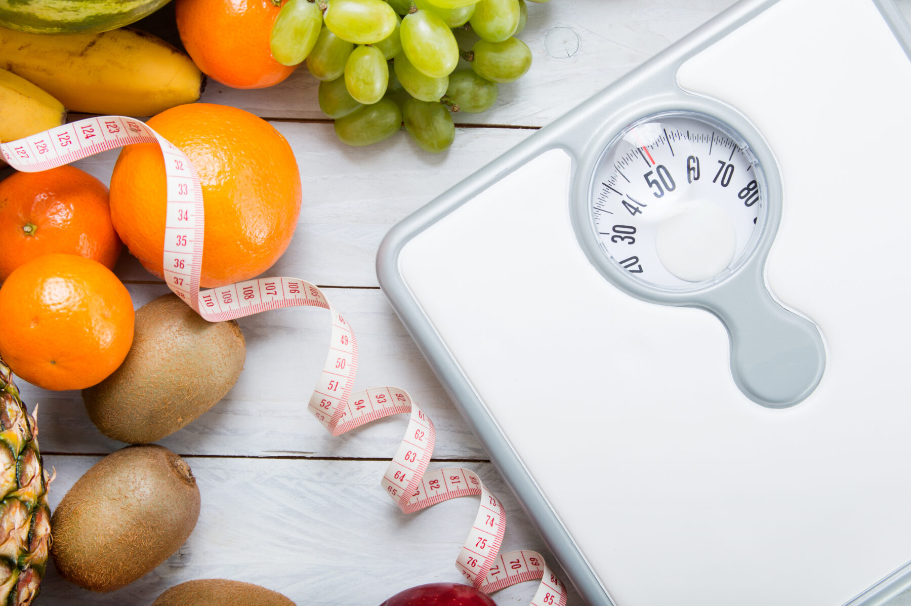

Tips for Gaining BMI

1. Consume a balanced diet with a slight caloric surplus.
2. Include a mix of carbohydrates, proteins, and healthy fats in your meals.
3. Engage in regular strength training exercises to build muscle mass.
4. Monitor your BMI regularly and adjust your diet and exercise accordingly.
5. Consider consulting with a registered dietitian for personalized nutrition guidance.
6. Include nutrient-rich snacks between meals to increase overall calorie intake.
7. Choose whole grains, lean proteins, and dairy for a nutrient-dense diet.
8. Stay consistent with your eating schedule to ensure regular nutrient intake.
9. Gradually increase portion sizes to avoid overwhelming your digestive system.
10. Focus on overall health and muscle development rather than just weight gain.
Tips for Losing BMI

1. Create a calorie deficit by consuming fewer calories than you burn.
2. Focus on a balanced diet with an emphasis on nutrient-dense foods.
3. Include regular aerobic exercises to help burn excess fat.
4. Monitor your BMI regularly and make adjustments to your lifestyle as needed.
5. Stay hydrated and aim for a variety of colorful fruits and vegetables for optimal nutrition.
6. Incorporate high-intensity interval training (HIIT) for effective fat burning.
7. Practice mindful eating to avoid emotional or stress-related overeating.
8. Include plenty of fiber-rich foods to promote satiety and digestive health.
9. Get adequate sleep, as lack of sleep can impact metabolism and weight loss efforts.
10. Consult with a healthcare professional before starting any drastic weight loss plan.
Tips for Maintaining BMI

1. Balance your caloric intake with your energy expenditure.
2. Include a variety of whole foods in your diet for optimal nutrition.
3. Engage in a combination of aerobic and strength training exercises.
4. Regularly assess your BMI and make adjustments to maintain a healthy range.
5. Prioritize sleep and stress management as they impact overall well-being.
6. Include regular physical activity, such as walking or cycling, in your routine.
7. Consume a diet rich in antioxidants from fruits and vegetables for overall health.
8. Avoid crash diets and focus on sustainable, long-term lifestyle changes.
9. Practice portion control to prevent overeating and maintain a stable weight.
10. Stay informed about nutritional trends and adjust your diet accordingly.